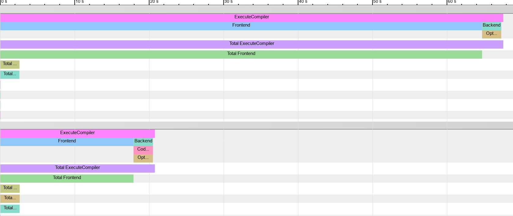

January 6, 2020
Waiting for std::embed: Very Large Arrays in Clang
Before we start
This blog post features iframes, interactive SVG files, and graphs which may not render properly on handheld devices. Sorry about that. The charts are however interactive, so you can zoom in an see the exact values.
If I were a compiler, I would simply put all your bytes in your binary
There have been a few interesting and passionate discussions about std::embed lately.
std::embed would surely be a great tool to have in one’s toolbox, and I’m sure some version of it will be adopted in time, once a consensus in reach (I have yet to find someone not sold on the usefulness
of that proposal).
But standardization (of anything) is challenging,
so in the meantime, I want to explore one of the motivations for std::embed:
Compiling large arrays is very time and resource-intensive. For any compiler.
How so? Well…
Of course, as hinted by ThePhd, If this exercice is taxing for your CPU, it’s nothing compared to what it does to your RAM:
50000000 ints, that’s about 200MB and maybe that is a bit ludicrous. There are valid use cases for large arrays.
For example, Qt’s resource system creates a file system for embedded resources.
<charconv>, crypto functions and other rely on lookup tables.
If you want these features to be constexpr, you can’t use linker tricks (besides who wants to use linker tricks ?)
You may have noticed I am working on unicode properties, and even with careful bit packing, these tables have thousands of elements.
Twitter had many other interesting use cases, to share, for example, people embed neural network weights on binaries targeting embedded platforms!
Hey #cplusplus twitter, what's your use cases for very large embedded binary data / const int arrays in C++ ?
— Corentin (@Cor3ntin) December 21, 2019
There is a well know trick to make your programs significantly faster: Use string literals!
int array[] = {1, 1, /*, ..., */ 1, 1}; //slow
const char* literal = // Fast
"\x00\x00\x00\x01\x00\x00\x00\x01"
/*....*/
"\x00\x00\x00\x01\x00\x00\x00\x01";
Unfortunately, there is a catch: MSVC cannot have string literals bigger than 65535 bytes.
I believe lifting this limitation would be ABI breaking and, therefore unlikely to happen. I hate ABI stability.
Anyway, It begs the question:
Why are strings literals so much faster than arrays?
There are a few tools to help us peek under the hood of the compiler.
One such tool is the -ast-dump option of clang which… well dumps its
internal representation.
That tool is conveniently available on Compiler Explorer:
And that is our culprit: Clang represents each number as its own AST NODE, whereas a string literal is always one node and each byte is represented by one byte.
IntegerLiteral have to keep track of:
* The value
* Type information for that value(including constness, signedness, exact type (int, long, etc)
* The source location of that value.
* And a few other things.
In the end, each node might store well about 100 bytes for 4 bytes value.
More critically, Each subexpression of InitListExpr may have an entirely different type and may be full expressions, function calls, lambdas and even
template instantiation.
struct a {
operator int() const;
};
template <typename T>
struct V {
static constexpr int v = 42;
};
int array[] = {a(), V<int>::v, []<typename T>(T i) {return T(); }(0)};
And at the same time, initializer-lists, can be used to initialize anything:
class instances, arrays, aggregates, std::initializer_list, and template version of all of the above.
Initialization in C++ is anything but trivial. In clang, the ten thousands lines of SemaInit.cpp
do most of that work, and will, for each element of what we naively hoped would be a simple array of integers, check that it is indeed convertible
to the type of that array.
This is a lot of work for our poor compiler.
Improving performance for integer arrays
Given that arrays of integers or bytes are somewhat common can we improve the performance of that use case? Time to clone llvm!
Clang is a massive codebase. I already played with it a bit but didn’t do anything particularly impressive with it. The sheer size and complexity aside, Clang is still a compiler. There are a few bits:
- A lexer, doing preprocessing and tokenization
- A parser
- Semantic Analysis
- LLVM IR generation
- Magic that transforms IR to object code
Where do we start? My first idea was to introduce an attribute so that the developer could tell the compiler to parse arrays in a specific way:
[[clang::literal_array]]
int array[] = {1, 2, 3, 4};
But it quickly occurred to me that having to manually tell the compiler to be efficient would be a bother and would have limited benefits.
New plan: Detect and optimize the pattern automatically. There are many ways to find your way around a big codebase: Profilers, debuggers, reading code. Lots of reading.
Soon enough, I found what I was looking for:
/// ParseBraceInitializer - Called when parsing an initializer that has a
/// leading open brace.
///
/// initializer: [C99 6.7.8]
/// '{' initializer-list '}'
/// '{' initializer-list ',' '}'
/// [GNU] '{' '}'
///
/// initializer-list:
/// designation[opt] initializer ...[opt]
/// initializer-list ',' designation[opt] initializer ...[opt]
///
ExprResult Parser::ParseBraceInitializer();
I was even blessed with some useful comments!
That function returns an InitListExpr which has one subexpression for each element of the
list.
We know that’s an issue, so let’s do something else!
Let’s Lex the entiere list (until the closing brace), and if all tokens are numeric constants return a new type of expression:
// Try to parse the initializer as a list of numeral literal
// To improve compile time of large arrays
if(NextToken().is(tok::numeric_constant)) {
ExprResult E = ParseListOfLiteralsInitializer();
if(!E.isInvalid()) {
return E;
}
//otherwise carry on
}
Implementing ParseListOfLiteralsInitializer was not hard.
Clang has facilities to do tentative parsing and revert the state of the lexer when the assumptions do not pan out.
But I now needed a new Expr type to return.
A bit more work, Expr types need to be handled all over the place, hundreds of places to change.
As of this writing, I barely did 10 percent of that work.
I gave it a bad name
class ListOfLiteralExpr : public Expr {
public:
ListOfLiteralExpr(ASTContext &Context,
SourceLocation LBraceLoc,
ArrayRef<llvm::APInt> Values,
QualType Ty,
SourceLocation RBraceLoc);
};
First draft: The location of each brace for diagnostic purposes,
A list of values, The type of each element (int, long, unsigned version, etc).
And that’s it.
Note that llvm::APInt is already bigger and more complex than we need to.
More on that later.
The main optimization there is to assume each element has the same type:
if we encounter for example {1, 1L};, we would have to bail out and take the
InitListExpr path.
My approach is not specifically efficient.
It is probably better to parse small list as InitListExpr
In any case, I never parse lists of less than 2 elements as ListOfLiteralExpr for a reason that will become obvious in a minute.
So far I have been successful in creating an expression type much faster to parse than InitListExpr. Still not as fast as StringLiteral though: A String is 1 token,
while I have a couple of tokens to parse per integer.
But the Lexer is rather fast, let’s leave it be for I have greater issues.
It didn’t realize it when I started down that path, but I would soon face
a ghastly realization: I introduced an expression which is an optimized version of
InitListExpr. I will, therefore, have to contend with the overwhelming complexity of
SemaInit.cpp A file requiring great knowledge of both initialization in C++ and Clang.
I knew neither.
Okay, that’s not entirely true:
You also need to understand C, OpenCL, and details of GCC and MSVC Extensions. I was doomed to fail!
The main problem is that Clang operates on expression.
My ListOfLiteralExpr type is an expression but its elements are not!
Never the less, I made some progress by creating a new class
class AbstractInitListExpr : public Expr {};
class ListOfLiteralExpr : public AbstractInitListExpr {};
class InitListExpr : public AbstractInitListExpr {};
Which let me mechanically share some code between my ListOfLiteralExpr and the existing InitListExpr,
in places where both classes had the information clang needed like the number of elements or the
type of an element (but not the element) itself.
Understanding anything about SemaInit took a while.
From what I could gather, clang operates multiple passes in the initialization list and construct
a sequence of operations to perform before finally the initialization.
Both C++ and C can be a bit crazy:
struct A {
int a;
struct {
int b;
int c;
};
int d;
int e;
} a = {1, 2, 3, .e = 4};
int x [10] = { [1] = 10};
Conversion, overloads, etc have to be resolved and let’s be honest, I have no idea what I am doing.
But I hacked something in
void InitializationSequence::InitializeFrom(
Sema &S,
const InitializedEntity &Entity,
const InitializationKind &Kind,
MultiExprArg Args,
bool TopLevelOfInitList,
bool TreatUnavailableAsInvalid);
Finding where to put things in is half the work:
I bodged that code together: It is nasty and bug-ridden:
It will not complain about long to short conversions for example
And converting ListOfLiteralExpr to InitListExpr is not efficient.
I am penalizing the general case for the sake of large arrays.
if(auto* ListExpr = dyn_cast_or_null<ListOfLiteralExpr>(Initializer)) {
// TODO CORENTIN: HANDLE MORE CASES
if (const ArrayType *DestAT = Context.getAsArrayType(DestType)) {
//Nasty
if(DestAT->getElementType()->isIntegerType()) {
TryListOfLiteralInitialization(S, Entity, Kind, ListExpr, *this,
TreatUnavailableAsInvalid);
return;
}
}
else {
//Convert back ListOfLiteralExpr to InitListExpr
}
}
But it works in most cases - but not for templates, I have not handled that at all so std::array a{1, 2, 3}; does not compile.
TryListOfLiteralInitialization is very simple - by virtue of omitting critical details:
I only check that the type I am initializing is an array of the right size
(or incomplete size, that works too!).
Ultimately, About 12000 lines into SemaDecl.cpp, we reach a successful, yet anticlimactic conclusion to that whole affair:
VDecl->setInit(Init);
We are done we parsing and semantic analysis (It is really just one big step, c++ parsing is highly context-dependent - I hope that will not keep you awake at night.)
The only thing left to do is to generate some code.
I understand that part the least, but, weaving AbstractInitListExpr in the part of the
code that handle Code Generation (IR) : GGExprAgg (Aggregate Expression Emitter), proved easy enough:
I could just defer to yet another part of the code: Constant Expression Evaluation, where all the constexpr goodness and constant folding happens:
Adding a visitor in ArrayExprEvaluator was easy:
bool ArrayExprEvaluator::VisitListOfLiteralExpr(const ListOfLiteralExpr *E) {
const ConstantArrayType *CAT = Info.Ctx.getAsConstantArrayType(E->getType());
assert(CAT && "ListOfLiteralExpr isn't an array ?!");
QualType EType = CAT->getElementType();
assert(EType->isIntegerType() && "unexpected literal type");
unsigned Elts = CAT->getSize().getZExtValue();
Result = APValue(APValue::UninitArray(),
std::min(E->getNumInits(), Elts), Elts);
for(unsigned I = 0; I < E->getNumInits(); I++ )
Result.getArrayInitializedElt(I) = APSInt(E->getInit(I));
return true;
}
I did optimize that later. But we now have enough to do some benchmarks, courtesy of some bad python scripts
f.write("int a [] = {")
f.write(",".join(["1"] * elems))
f.write("}; int main (int argc, char**) { return a[argc]; }")We made compile time 3 times better. Not bad! It takes under 10 seconds to generate a file with 200MB of data.
Using -ftime-trace, we get a better sense of the gains:
You can read more about -ftime-trace: here.
Very handy tool, especially to measure and optimize the compile times of your own code!
It turns out that chrome even support comparing multiple framgraph by hacking the rendered file.
I couldn’t find any vizualizer beside chrome://tracing, so a png will have to do:

Interestingly, memory usage does not seem to have improved much.
The compile times of small arrays are lost in the noise. So instead, for the graph below, I measure the compile time of 1000 arrays of the given size, the result is then divided by 1000 to give us an average time per array.
It would seem the improvement is visible for small arrays. Take that with a big pinch of salt: The modifications probably pessimize the non-array cases. But on the graph below, the compile-time decrease by over 70% on average for all array sizes. (For small values, the benchmarked source file contain 1000 arrays of the given size)
AstSmtWriter And Modules
Precompiled headers, Module Headers Units, and Module Interfaces alike share some of the same binary format.
AstSmtWriter and AstSmtReader are responsible for
binary serialization of Statements (and Expressions, Expressions are Statements in clang - It does
make sense).
As I wanted to see how modules help with big arrays, I did implement serialization
for my newly minted ListOfLiteralExpr.
At the same time, I decided to make my implementation a bit cleaner.
Up to now, I stored my values in a llvm::SmallVector<Values>.
But, clang has it’s own allocator and expression needing some extra heap
space can ask the allocators to lay out the extra data after the object.
class ListOfLiteralExpr final: public AbstractInitListExpr,
private llvm::TrailingObjects<ListOfLiteralExpr, unsigned, char>
{
unsigned numTrailingObjects(OverloadToken<unsigned>) const {
return 1;
}
unsigned numTrailingObjects(OverloadToken<char>) const {
return *getTrailingObjects<unsigned>();
}
ListOfLiteralExpr*
ListOfLiteralExpr::Create(ASTContext &Context,
SourceLocation LBraceLoc,
ArrayRef<uint64_t> Values,
QualType Ty,
SourceLocation RBraceLoc) {
void *Mem = Context.Allocate(totalSizeToAlloc<unsigned, char>(1,Bytes),
alignof(ListOfLiteralExpr));
auto * E = new (Mem)
ListOfLiteralExpr(Context, LBraceLoc, Values, Ty, RBraceLoc);
*E->getTrailingObjects<unsigned>() = Bytes;
return E;
}
Lots of complex machinery in there! This would lay in memory:
ListOfLiteralExpr instance| unsigned: number of bytes | char[Bytes]: the values
char[]?
Yes,
ListOfLiteralExpr is meant to store any kind of integer literal and these can be of different sizes.
And so storing an array of uint64_t would be inefficient.
So instead we can store an array of char and reinterpret_cast it to type corresponding to the size of our integer values.
This fails utterly if the target platform doesn’t have 8 bits bytes.
I utterly didn’t care.
That trick can be elegantly implemented:
#include <tuple>
uint64_t f(const char* bytes, unsigned byte_size, unsigned index) {
template for (constexpr auto dummy :
std::tuple<uint8_t, uint16_t, uint32_t, uint64_t>()) {
if(byte_size == sizeof(dummy)) {
return reinterpret_cast<const decltype(dummy)*>(bytes)[index];
}
}
__builtin_unreachable();
}
Oh, wait. That will not compile until C++23. (But it will compile on compiler explorer). We have to manually write lots of if statements. Or define a Macr…
Don’t even go there. I dare you. I double dare you.
Now that all our integers are nicely packed in memory, the serialization code is easy:
void ASTStmtWriter::VisitListOfLiteralExpr(ListOfLiteralExpr* E) {
VisitExpr(E);
const auto S = E->sizeOfElementsAsUint64();
Record.writeUInt64(S);
Record.AddSourceLocation(E->getLBraceLoc());
Record.AddSourceLocation(E->getRBraceLoc());
Record.AddTypeRef(E->getInitsType());
Record.writeUInt64(E->getNumInits());
const auto Elems = E->getElementsAsUint64();
Record.append(Elems, Elems + S);
Code = serialization::EXPR_INIT_LITERALS_LIST;
}
I might have cheated a bit.
See, the serialization underlying type is a stream of uint64_t.
So I made sure my bytes are a multiple of sizeof(uint64_t).
It might be a bit nasty. But I don’t care because
- I can memcopy the entire thing efficiently
- I only use as many bytes as I need, whereas string literals in clang modules use a
uint64_tfor each and every character. Not that anyone should care terribly: disk is cheap
Reading is the opposite.
By the way, this is why distributing compiled modules is a terrible idea: The serialization can never be optimized once people start to do that. Don’t.
We can now do some benchmarks with modules
// Baseline
int i[] = {1, /*...*/, 1};
int main() {}
//Module
export module M;
export int i[] = {1, /*...*/, 1};
//importer
import M;
int main() {}
Modules do seem to provide some performance benefits, but these benefits are not obvious until the array is outlandishly big, over 100MB of binary data.
A bittersweet conclusion
If I am being generous with myself, I may be 20% toward something usable in production and eventually mergeable in LLVM. Of the many todos:
- Support for floating points and characters literals:
- Better, saner integration in Sema Init
- Integration in tooling
- See if constexpr compilation of the array can be further improved
There are a few more weeks worth of effort.
And sure, objectively, I made clang noticeably faster. On some workloads.
Unrealistic workloads maybe.
Profilers and pretty graphs are seductive.
Overfitting is a sure way to produce stupendous numbers.
And the cost of that is added complexity in clang.
Is that added complexity worth the trouble? I don’t think I am qualified to answer that.
Truth is, it is quite clear to me that, a few //FIXME here and there notwithstanding,
LLVM is a well-optimized machine, and I was only able to get
some improvements by peeling off layers of abstractions.
Would clang maintainers welcome the increased complexity?
There is another way to look at it though: People care about compile times to the point they will sacrifice maintainability of their code for a slight increase in compilation speed.
A while I can lament that compile-time is the last thing people should be optimizing for, A few microseconds here and there in Clang benefits millions of people.
Then again, it would probably be wiser to put that energy in std::embed, which
does beat all the optimizations presented here by orders of magnitude!
References And Tools
This blog post ended up representing about a week of work. Confronted with a large codebase, I can only recommend beefy hardware and tools:
- Valgrind, Vtune, Perf and Hotspot for performance analysis
- C-Reduce a very handy tool to find the smallest code that reproduces a compiler crash
- Compiler Explorer, the only C++ compiler one should ever need
- FlameGraph and Plotly to generate the charts for the present blog post, with the help of a few off-putting python scripts.
The sources for LLVM are now in an awesome easy-to-clone Github repository.
You can find the patch for that article here.
Do not expect anything from it: It is blog-post driven development!
Thanks for reading, let me know what you think!
Share on